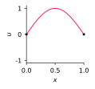
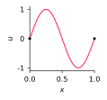
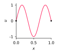
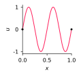
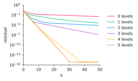
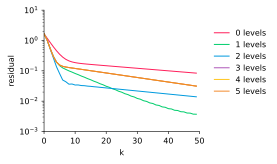
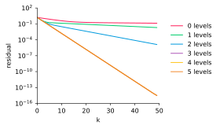

Applied Mathematics 205
Unit 5. Eigenvalue Problems
and Iterative Methods
Lecturer: Petr Karnakov
November 21, 2022
Outline
- In this Unit, we will discuss
- methods to compute eigenvalues and eigenvectors of matrices
- iterative methods to solve linear systems
- Eigenvalue problems have applications in stability analysis,
vibration analysis, and are useful to study properties of matrices - Iterative methods are better suited for large-scale problems
and parallel computation than direct methods (e.g. Gaussian elimination)
Eigenvalues and Eigenvectors
- Consider a matrix $A\in\mathbb{R}^{n\times n}$
- Vector $v\in\mathbb{R}^{n}$ is called an eigenvector of $A$ if \[ Av = \lambda v \] for a scalar $\lambda\in\mathbb{R}$
- The corresponding $\lambda$ is called an eigenvalue of $A$
- Pair $(\lambda,v)$ is called an eigenpair
- The prefix comes from German “eigen” meaning “own”
- In the following, we will also consider complex matrices $A\in\mathbb{C}^{n\times n}$,
eigenvectors $v\in\mathbb{C}^n$, and eigenvalues $\lambda\in\mathbb{C}$
Motivation: Eigenvalue Problems
- The definition of eigenvalues extends to linear operators in general,
including differential operators in a function space - Recall the wave equation describing the vibration of a string \[ u_{tt}-c^2u_{xx}=0 \] with zero Dirichlet boundary conditions $u(0, t)=u(1, t)=0$
- Eigenfunctions $U(x)$ of the operator $U_{xx}$ found from the problem \[ U_{xx}=\lambda U \] correspond to solutions of the wave equation called standing waves \[ u(x,t)=e^{i\omega t} U(x) \]
Motivation: Eigenvalue Problems
- By substituting the ansatz $u(x,t)=e^{i\omega t} U(x)$ into the wave equation \[ \frac{\partial^2}{\partial t^2}\Big(e^{i\omega t} U(x)\Big) - c^2\frac{\partial^2}{\partial x^2}\Big(e^{i\omega t} U(x)\Big) = 0 \] and using that $U(x)$ is an eigenfunction, we get \[ (-\omega^2 - c^2 \lambda) e^{i\omega t} U(x) = 0 \]
- So the wave equation is satisfied for \[ \omega = c\sqrt{-\lambda} \]
Motivation: Eigenvalue Problems
- Eigenfunctions $U(x)$ of the operator $U_{xx}$ \[ U_{xx}=\lambda U \] that satisfy boundary conditions $U(0)=U(1)=0$ are given by \[ U_k(x)=\sin{(\pi k x)} \qquad k=1,2,\dots \] with eigenvalues $\lambda_k=-\pi^2k^2$
$\sin(\pi x)$
$\sin(2\pi x)$
$\sin(3\pi x)$
$\sin(4\pi x)$




Motivation: Eigenvalue Problems 🔊
- Wave equation with forcing [Unit 3]
\[
u_{tt} - u_{xx} = f
\]

- Energy $\int{u_t^2dx}$
- Sound $\int{u_x^2dx}$ (change in arc length)

- Forcing $f = x \sin(\omega(t) t)$
$\omega(t)=at + b$
Motivation: Eigenvalue Problems
- This is an example of resonance:
the system is able to store energy at certain frequencies - Other systems and phenomena related to resonance
- pendulums
- natural vibration modes of structures
- musical instruments
- lasers
- nuclear magnetic resonance (NMR)
Eigenvalue Problems
- Eigenvalues and eigenvectors of real-valued matrices can be complex
- Therefore, we will generally work with complex-valued matrices and vectors
- For $A \in \mathbb{C}^{n\times n}$, consider the eigenvalue problem:
find $(\lambda,v) \in \mathbb{C}\times\mathbb{C}^n$ such that \[ \begin{aligned}Av &= \lambda v\\ \|v\|_2 &= 1\end{aligned} \] - The 2-norm of a complex vector $v\in\mathbb{C}^n$ is defined
using absolute values of components (as opposed to just $(v_k)^2$):
\[ \textstyle \|v\|_2 = \big(\sum_{k=1}^n |v_k|^2\big)^{1/2} \]
Eigenvalues and Eigenvectors
- This problem can be reformulated as \[ (A - \lambda{I})v = 0 \]
- We know this system has a non-trivial solution
if and only if $(A - \lambda I)$ is singular, therefore \[ \det(A - \lambda{I}) = 0 \] - The polynomial $p(z) = \det(A - z{I})$ is called
the characteristic polynomial of $A$ - Eigenvalues $\lambda$ are roots of $p(z)$
Characteristic Polynomial
- By the fundamental theorem of algebra, we can factorize $p(z)$ as \[ p(z) = c_n(z - \lambda_1)(z - \lambda_2)\cdots(z - \lambda_n) \] where the roots $\lambda_i \in \mathbb{C}$ need not be distinct
- Note also that complex eigenvalues of a real matrix $A \in \mathbb{R}^{n\times n}$
must occur as complex conjugate pairs - That is, if $\lambda = \alpha + i\beta$ is an eigenvalue,
then so is its complex conjugate $\overline\lambda = \alpha - i\beta$
Characteristic Polynomial
- This follows from the fact that for a polynomial $p$ with real coefficients,
$p(\overline{z}) = \overline{p(z)}$ for any $z \in \mathbb{C}$: \[ p(\overline{z}) = \sum_{k=0}^n c_k (\overline{z})^k = \sum_{k=0}^n c_k \overline{z^k} = \overline{\sum_{k=0}^n c_k z^k} = \overline{p(z)} \] - Therefore, if $w \in \mathbb{C}$ is a root of $p$, then so is $\overline{w}$, since \[ 0 = p(w) = \overline{p(w)} = p(\overline{w}) \]
Companion Matrix
- We have seen that every matrix has an associated characteristic polynomial
- Conversely, every polynomial has an associated companion matrix
- The companion matrix $C_n$, of a polynomial $p \in \mathbb{P}_n$
is a matrix which has eigenvalues that match the roots of $p$ - Divide $p$ by its leading coefficient to get a monic polynomial,
i.e. with leading coefficient equal to 1 (this doesn’t change the roots) \[ p_\text{monic}(z) = c_0 + c_1 z + \cdots + c_{n-1}z^{n-1} + z^n \]
Companion Matrix
- Then $p_\text{monic}$ is the characteristic polynomial
of the following $n\times n$ matrix \[ C_n = \left[ \begin{array}{ccccc} 0 & 0 & \cdots & 0 & -c_0\\ 1 & 0 & \cdots & 0 & -c_1\\ 0 & 1 & \cdots & 0 & -c_2\\ \vdots & \vdots & \ddots & \vdots & \vdots\\ 0 & 0 & \cdots & 1 & -c_{n-1} \end{array} \right] \] - Therefore, $C_n$ is companion matrix for $p$
Companion Matrix
- Let us show this for the $n=3$ case
- Consider \[ p_{\text{monic}}(z) = c_0 + c_1z + c_2 z^2 + z^3 \] for which \[ \small C_3 = \left[ \begin{array}{ccc} 0 & 0 & -c_0\\ 1 & 0 & -c_1\\ 0 & 1 & -c_2 \end{array} \right] \]
- Recall that the determinant of a $3 \times 3$ matrix is \[ \small\textstyle \det \left[ \begin{array}{ccc} a_{11} & a_{12} & a_{13}\\ a_{21} & a_{22} & a_{23}\\ a_{31} & a_{32} & a_{33} \end{array} \right] = \begin{array}{c} \\ a_{11}a_{22}a_{33} + a_{12}a_{23}a_{31} + a_{13}a_{21}a_{32} \\ - a_{13}a_{22}a_{31} - a_{11}a_{23}a_{32} - a_{12}a_{21}a_{33} \end{array} \]
Companion Matrix
- Substituting entries of $C_3$ then gives \[ \det(z {\rm I} - C_3) = c_0 + c_1 z + c_2 z^2 + z^3 = p_{\text{monic}}(z) \]
- This link between matrices and polynomials is used by
numpy.roots()
that computes roots of a polynomial as eigenvalues of the companion matrix
Eigenvalue Decomposition
- Let $\lambda$ be an eigenvalue of $A \in \mathbb{C}^{n\times n}$; the set of all eigenvalues is called the spectrum of $A$
- The algebraic multiplicity of $\lambda$ is the multiplicity of the corresponding root of the characteristic polynomial
- The geometric multiplicity of $\lambda$ is the number of linearly independent eigenvectors corresponding to $\lambda$
- For example, for $A = {\rm I}$, $\lambda = 1$ is an eigenvalue with algebraic and geometric multiplicity of $n$
Eigenvalue Decomposition
- Theorem: The geometric multiplicity of an eigenvalue
is less than or equal to its algebraic multiplicity - If $\lambda$ has geometric multiplicity strictly less than algebraic multiplicity,
then $\lambda$ is said to be defective - We say a matrix is defective if it has at least one defective eigenvalue
Eigenvalue Decomposition
- For example, the matrix
\[
A =
\left[
\begin{array}{ccc}
2 & 1 & 0\\
0 & 2 & 1\\
0 & 0 & 2
\end{array}
\right]
\]
has one eigenvalue with algebraic multiplicity of 3
and geometric multiplicity of 1>>> import numpy as np >>> a = np.array([[2, 1, 0], [0, 2, 1], [0, 0, 2]]) >>> d, v = np.linalg.eig(a) >>> d array([ 2., 2., 2.]) >>> v array([[ 1.00000e+00, -1.00000e+00, 1.00000e+00], [ 0.00000e+00, 4.44089e-16, -4.44089e-16], [ 0.00000e+00, 0.00000e+00, 1.97215e-31]])
Eigenvalue Decomposition
- Let $A \in\mathbb{C}^{n\times n}$ be a nondefective matrix, then it has a full set of $n$ linearly independent eigenvectors $v_1, v_2, \ldots, v_n \in \mathbb{C}^n$
- Suppose $V \in \mathbb{C}^{n\times n}$ contains the eigenvectors of $A$ as columns,
and let $D = \mathop{\mathrm{diag}}(\lambda_1,\ldots,\lambda_n)$ - Then $A v_i = \lambda_i v_i$, $i=1,2,\ldots,n$ is equivalent to $AV = VD$
- Since we assumed $A$ is nondefective, we can invert $V$ to obtain \[ \htmlClass{color5}{ A = VDV^{-1}} \]
- This is the eigendecomposition of $A$
- This shows that for a non-defective matrix, $A$ is diagonalized by $V$
Eigenvalue Decomposition
- We introduce the conjugate transpose $A^\ast \in \mathbb{C}^{n\times m}$ of a matrix $A \in \mathbb{C}^{m\times n}$ \[ (A^\ast)_{ij} = \overline{A_{ji}}, \quad i = 1,2,\ldots,m, ~ j = 1,2,\ldots,n \]
- A matrix is said to be hermitian if $A = A^\ast$
(this generalizes matrix symmetry) - A matrix is said to be unitary if $AA^\ast = {\rm I}$
(this generalizes the concept of an orthogonal matrix) - Also, for $v \in\mathbb{C}^n$, $\|v\|_2 = \sqrt{v^*v}$
Eigenvalue Decomposition
- For
numpy-array, the.Tproperty contains the transpose,
while the.getH()function performs the conjugate transpose>>> import numpy as np >>> a = np.matrix([[1+1j, 2+3j], [0, 4]]) >>> a.T matrix([[ 1.+1.j, 0.+0.j], [ 2.+3.j, 4.+0.j]]) >>> a.getH() matrix([[ 1.-1.j, 0.-0.j], [ 2.-3.j, 4.-0.j]])
Eigenvalue Decomposition
- In some cases, the eigenvectors of $A$
can be chosen such that they are orthonormal \[ v_i^\ast v_j = \begin{cases} 1, \quad i=j\\ 0, \quad i\neq j \end{cases} \] - In such a case, the matrix of eigenvectors $Q$ is unitary,
and hence $A$ can be unitarily diagonalized \[ A = Q D Q^\ast \]
Eigenvalue Decomposition
- Theorem: A hermitian matrix is unitarily diagonalizable,
and its eigenvalues are real - But hermitian matrices are not the only matrices that can be unitarily diagonalized
- Matrix $A \in\mathbb{C}^{n\times n}$ is called normal if \[ A^\ast A = A A^\ast \]
- Theorem: A matrix is unitarily diagonalizable if and only if it is normal
Gershgorin’s Theorem
- Due to the link between eigenvalues and polynomial roots,
in general one has to use iterative methods to compute eigenvalues
(recall that polynomials of degree higher than four cannot be solved in radicals) - However, it is possible to gain some information about eigenvalue locations more easily from Gershgorin’s Theorem
- Let $D(c, r) = \{ x \in \mathbb{C}: |x - c| \leq r\}$ denote a disk in the complex plane centered at $c$ with radius $r$
- For a matrix $A \in \mathbb{C}^{n\times n}$, disk $D(a_{ii}, R_i)$ is called a Gershgorin disk, where \[ \textstyle R_i = \sum_{\substack{j=1\\j\neq i}}^n |a_{ij}| \]
Gershgorin’s Theorem
- Theorem: All eigenvalues of $A \in \mathbb{C}^{n\times n}$ are contained
within the union of all $n$ Gershgorin disks of $A$ - Proof: Assume that $Av=\lambda v$, and $i=\mathrm{argmax}_j|v_j|$. \[ \left|\lambda -a_{ii}\right|=\left|\sum _{j\neq i}{\frac {a_{ij}v_{j}}{v_{i}}}\right|\leq \sum _{j\neq i}\left|a_{ij}\right|=R_{i}\quad\square \]
Gershgorin’s Theorem
- Recall that a matrix is diagonally dominant if \[ \textstyle |a_{ii}| > \sum_{\substack{j=1\\j\neq i}}^n |a_{ij}|, \quad \text{for}~i=1,2,\ldots,n \]
- It follows from Gershgorin’s Theorem that a diagonally dominant matrix cannot have a zero eigenvalue, hence must be invertible
- For example, the finite difference discretization matrix of the differential operator $-\nabla^2 + {\rm I}$ is diagonally dominant
- In -dimensions, $(-\nabla^2 + {\rm I})u = -u_{xx} - u_{yy} + u$
(each row of the corresponding discretization matrix contains
diagonal entry $4/h^2 + 1$, and four off-diagonal entries of $-1/h^2$)
Algorithms for Eigenvalue Problems
Power Method
- The power method is perhaps the simplest eigenvalue algorithm
- It finds the eigenvalue of $A \in \mathbb{C}^{n\times n}$ with largest absolute value
1:$\hspace{0em}$choose $x_0 \in \mathbb{C}^n$ arbitrarily
2:$\hspace{0em}$for $k = 1,2,\ldots$ do
3:$\hspace{1.2em}x_k = A x_{k-1}$
4:$\hspace{0em}$end for - Question: How does this algorithm work?
Power Method
- Assuming $A$ is nondefective, so the eigenvectors $v_1,v_2,\ldots,v_n$
provide a basis for $\mathbb{C}^n$ - Assume that the eigenvalues are ordered: $|\lambda_1| \leq |\lambda_2| \leq \cdots \leq |\lambda_n|$
- Therefore there exist coefficients $\alpha_i$ such that $x_0 = \sum_{j=1}^n \alpha_j v_j$
- Then, we have \[ \begin{aligned}\small x_k &= Ax_{k-1} = A^2x_{k-2} = \cdots = A^kx_0\\ &= A^k \left(\sum_{j=1}^n \alpha_j v_j\right) = \sum_{j=1}^n \alpha_j A^k v_j = \sum_{j=1}^n \alpha_j \lambda_j^k v_j \\ &= \lambda_n^k\left(\alpha_nv_n + \sum_{j=1}^{n-1} \alpha_j \left[\frac{\lambda_j}{\lambda_n}\right]^k v_j \right)\end{aligned} \]
Power Method
- Then if $|\lambda_n| > |\lambda_j|$, $1 \leq j < n$, we see that $x_k \to \lambda_n^k\alpha_nv_n$ as $k \to \infty$
- This algorithm converges linearly: the error terms are scaled by a factor at most $|\lambda_{n-1}|/|\lambda_{n}|$ at each iteration
- Also, we see that the method converges faster if $\lambda_n$ is well-separated from the rest of the spectrum
Power Method
- However, in practice the exponential factor $\lambda_n^k$ could cause overflow or underflow after relatively few iterations
- Therefore the standard form of the power method is actually
the normalized power method1:$\hspace{0em}$choose $x_0 \in \mathbb{C}^n$ arbitrarily
2:$\hspace{0em}$for $k = 1,2,\ldots$ do
3:$\hspace{1.2em}y_k = A x_{k-1}$
4:$\hspace{1.2em}x_k = y_k/\|y_k\|$
5:$\hspace{0em}$end for
Power Method
- Convergence analysis of the normalized power method is essentially the same as the un-normalized case
- Only difference is we now get an extra scaling factor, $c_k \in \mathbb{R}$, due to the normalization at each step \[ x_k = c_k \lambda_n^k\left(\alpha_nv_n + \sum_{j=1}^{n-1} \alpha_j \left[\frac{\lambda_j}{\lambda_n}\right]^k v_j \right) \]
Power Method
- This algorithm directly produces the eigenvector $v_n$
- One way to recover $\lambda_n$ is to note that \[ y_k = A x_{k-1} \approx \lambda_n x_{k-1} \]
- Hence we can compare an entry of $y_k$ and $x_{k-1}$ to approximate $\lambda_n$
- We also note two potential issues:
- we require $x_0$ to have a nonzero component of $v_n$
- there may be more than one eigenvalue with maximum absolute value
Power Method
- These issues may not realize in practice
- Issue 1:
- Very unlikely that $x_0$ will be orthogonal to $v_n$
- Even if $x_0^\ast v_n = 0$, rounding error will introduce a component of $v_n$ during the power iterations
- Issue 2:
- We cannot ignore the possibility that there is more than one maximum eigenvalue
- In this case $x_k$ would converge to a member of the corresponding eigenspace
Power Method
- An important idea in eigenvalue computations is to consider the “shifted” matrix $A - \sigma {\rm I}$, for $\sigma \in \mathbb{R}$
- We see that \[ (A - \sigma {\rm I}) v_i = (\lambda_i - \sigma) v_i \] and hence the spectrum of $A-\sigma{\rm I}$ is shifted by $-\sigma$, and the eigenvectors are the same
- For example, if all the eigenvalues are real, a shift can be used with the power method to converge to $\lambda_1$ instead of $\lambda_n$
Inverse Iteration
Inverse Iteration
- The eigenvalues of $A^{-1}$ are the reciprocals of the eigenvalues of $A$, since \[ Av = \lambda v \Longleftrightarrow A^{-1} v = \frac{1}{\lambda} v \]
- Question: What happens if we apply the power method to $A^{-1}$?
Inverse Iteration
- Answer: We converge to the largest (in absolute value) eigenvalue of $A^{-1}$, which is $1/\lambda_1$ (recall that $\lambda_1$ is the smallest eigenvalue of $A$)
- This is called inverse iteration
1:$\hspace{0em}$choose $x_0 \in \mathbb{C}^n$ arbitrarily
2:$\hspace{0em}$for $k = 1,2,\ldots$ do
3:$\hspace{1.2em}$solve $Ay_k = x_{k-1}$ for $y_k$
4:$\hspace{1.2em}x_k = y_k/\|y_k\|$
5:$\hspace{0em}$end for
Inverse Iteration
- Hence inverse iteration gives $\lambda_1$ without requiring a shift
- This is helpful since it may be difficult to determine
what shift is required to get $\lambda_1$ in the power method - Question: What happens if we apply inverse iteration
to the shifted matrix $A - \sigma {\rm I}$?
Inverse Iteration
- The smallest eigenvalue of $A - \sigma {\rm I}$ is $(\lambda_{i^\ast}-\sigma)$, where \[ i^\ast = \argmin_{i=1,\dots,n}|\lambda_i - \sigma| \]
- Answer: We converge to $\tilde\lambda = 1/(\lambda_{i^\ast} - \sigma)$, then recover $\lambda_{i^\ast}$ via \[ \lambda_{i^\ast} = \frac{1}{\tilde\lambda} + \sigma \]
- Inverse iteration with shift allows us to find the eigenvalue closest to $\sigma$
Rayleigh Quotient
Rayleigh Quotient
- Consider a real matrix $A \in \mathbb{R}^{n\times n}$
- Assume that the eigenvalues are ordered: $|\lambda_1| \leq |\lambda_2| \leq \cdots \leq |\lambda_n|$
- The Rayleigh quotient is a function $r:\mathbb{R}^n\to\mathbb{R}$ defined as \[ r(x) = \frac{x^T A x}{x^T x} \]
- If $Av=\lambda v$, then \[ r(v) = \frac{v^T A v}{v^T v} = \frac{\lambda v^T v}{v^T v} = \lambda \]
Rayleigh Quotient
- Theorem: Suppose $A \in \mathbb{R}^{n\times n}$ is a symmetric matrix, then for any $x \in\mathbb{R}^n$ \[ \lambda_{\rm 1} \leq r(x) \leq \lambda_n \]
- Proof: We write $x$ as a linear combination of orthogonal eigenvectors
$x = \sum_{j=1}^n \alpha_j v_j$, and the lower bound follows from \[ r(x) = \frac{x^T A x}{x^T x} = \frac{\sum_{j=1}^n \lambda_j \alpha_j^2}{\sum_{j=1}^n \alpha_j^2} \geq \lambda_1 \frac{\sum_{j=1}^n \alpha_j^2}{\sum_{j=1}^n \alpha_j^2} = \lambda_1 \] - The proof of the upper bound $r(x) \leq \lambda_n$ is analogous $\quad \square$
- Therefore, the Rayleigh quotient of a symmetric matrix
always remains within the range of its spectrum
Rayleigh Quotient
- Theorem: A symmetric matrix $A \in \mathbb{R}^{n\times n}$ is positive definite
if and only if all of its eigenvalues are positive - Proof: ($\Rightarrow$) Suppose $A$ is symmetric positive definite,
then for any nonzero $x \in \mathbb{R}^n$, we have $x^T A x > 0$. Take $x=v_1$ \[ \lambda_1 = r(v_1) = \frac{v_1^TAv_1}{v_1^T v_1} > 0 \] - ($\Leftarrow$) Suppose $A$ has positive eigenvalues, then for any nonzero $x \in \mathbb{R}^n$,
from the previous theorem \[ x^T A x = r(x) (x^T x) \geq \lambda_1 \|x\|_2^2 > 0\quad \square \]
Rayleigh Quotient
- If $x\in\mathbb{R}^n$ approximates an eigenvector,
then $r(x)$ approximates the eigenvalue - Consider Taylor’s expansion of $r(x)$ about a vector $v$ \[ r(x) = r(v) + \nabla r(v)^T (x-v) + \mathcal{O}(\|x-v\|^2_2) \]
Rayleigh Quotient
- Let’s compute the gradient $\nabla r(x)$
- Recall from [Unit 1, slide 69] that $\nabla (x^T A x) = (A+A^T)x$
- Then using the product rule \[ \begin{aligned}\nabla r(x) &= \nabla \Big({x^TAx}\frac{1}{x^Tx}\Big) = \frac{\nabla (x^TAx)}{x^Tx} - (x^TAx)\frac{\nabla(x^T x)}{(x^Tx)^2} = \\ &= \frac{(A+A^T)x}{x^Tx} - (\htmlClass{color5}{x^TAx})\frac{2x}{(\htmlClass{color5}{x^Tx})^2} = \frac{(A+A^T)x}{x^Tx} - \htmlClass{color5}{r(x)}\frac{2x}{x^Tx} = \\ &= \frac{2}{x^T x} \Big( \frac{A+A^T}{2}x - r(x) x \Big) = \frac{2}{x^T x} \Big( \frac{A+A^T}{2} - r(x) I \Big) x \end{aligned} \]
Rayleigh Quotient
- If $A$ is symmetric, then $A=\tfrac{A+A^T}{2}$ and \[ \nabla r(x) = \frac{2}{x^T x} \big(A - r(x) I \big)x \]
- Therefore, eigenvectors of a symmetric matrix
coincide with stationary points of its Rayleigh quotient - Indeed, for any $x\neq 0$ and $\lambda\in\mathbb{R}$ \[ Ax=\lambda x \;\Leftrightarrow\; \frac{2}{x^T x}(A-\lambda I) x=0 \;\Leftrightarrow\; \nabla r(x) = 0, \; \lambda=r(x) \]
Rayleigh Quotient
- Suppose that $Av=\lambda v$
- Then $r(v)=\lambda$ and $\nabla r(v)=0$, therefore Taylor’s expansion turns into \[ r(x) = r(v) + \nabla r(v)^T (x-v) + \mathcal{O}(\|x-v\|^2_2) = \lambda + \mathcal{O}(\|x-v\|^2_2) \]
- Then the approximation error is \[ |r(x) - \lambda| = \mathcal{O}(\|x-v\|^2_2) \]
- That is, the Rayleigh quotient approximation to an eigenvalue
squares the error of the approximation to the eigenvector
Rayleigh Quotient Iteration
- The Rayleigh quotient iteration combines the inverse iteration,
spectrum shifts, and Rayleigh quotient approximations to an eigenvalue1:$\hspace{0em}$choose $x_0 \in \mathbb{R}^n$ arbitrarily
2:$\hspace{0em}$for $k = 1,2,\ldots$ do
3:$\hspace{1.2em}\sigma_k = \tfrac{x_{k-1}^T A x_{k-1}}{x_{k-1}^T x_{k-1}}$
4:$\hspace{1.2em}$solve $(A-\sigma_k I)y_k = x_{k-1}$ for $y_k$
5:$\hspace{1.2em}x_k = y_k/\|y_k\|$
6:$\hspace{0em}$end for
Rayleigh Quotient Iteration
- For a symmetric matrix $A$, if the Rayleigh quotient iteration
converges, it results in cubic convergence - Let’s show the idea for the case $0 < \lambda_1 < \lambda_2 \leq \dots \leq \lambda_n$
assuming that $x_k\to v_1$ and $\sigma_k \to \lambda_1$ - Convergence of the inverse iteration is linear, and the rate is determined
by the ratio of the two eigenvalues closest to zero. Asymptotically, \[ \|x_k - v_1\| \sim \tfrac{|\lambda_1 - \sigma_k|}{|\lambda_2 - \sigma_k|}\, \|x_{k-1} - v_1\| \sim \tfrac{|\lambda_1 - \sigma_k|}{|\lambda_2 - \lambda_1|}\, \|x_{k-1} - v_1\| \] - On the other hand, the Rayleigh quotient squares the error \[ |\lambda_1 - \sigma_k| = \mathcal{O}(\|x_{k-1} - v_1\|^2) \]
- This shows cubic convergence \[ \|x_k - v_1\| \leq C \|x_{k-1} - v_1\|^3 \]
Rayleigh Quotient Iteration: Example
- See [examples/unit5/rayleigh_iter.py]
the Rayleigh quotient iteration applied to a $3\times 3$ matrix \[ A = \begin{bmatrix} 5 & 1 & 1 \\ 1 & 6 & 1 \\ 1 & 1 & 7 \end{bmatrix} \]it=0 |Ax - sigma x| = 2.2176638128637163e-01 |sigma - lambda| = 2.1431974337752990e-01 it=1 |Ax - sigma x| = 1.2052279264915474e-03 |sigma - lambda| = 1.2049892791683448e-03 it=2 |Ax - sigma x| = 1.9350397099098787e-10 |sigma - lambda| = 1.9349855051586928e-10 it=3 |Ax - sigma x| = 0.0000000000000000e+00 |sigma - lambda| = 5.3290705182007514e-15
QR Algorithm
QR Algorithm
- The QR algorithm is a standard algorithm for computing eigenvalues
- It was developed independently in the late 1950s
by John G.F. Francis (England) and Vera N. Kublanovskaya (USSR) - The QR algorithm efficiently provides approximations
to all eigenvalues and eigenvectors of a matrix - In the following, assume that $A\in\mathbb{A}^{n\times n}$ is symmetric
QR Algorithm
- To motivate the QR-algorithm, let’s start with
the power method applied to $p$ vectors at once - Let $x_1^{(0)},\ldots,x_p^{(0)}$ denote $p$ linearly independent starting vectors
stored in the columns of $X_0\in\mathbb{R}^{n\times p}$ - The power method applied to these vectors results in
1:$\hspace{0em}$choose an $n\times p$ matrix $X_0$ arbitrarily
2:$\hspace{0em}$for $k = 1,2,\ldots$ do
3:$\hspace{1.2em}$$X_k = A X_{k-1}$
4:$\hspace{0em}$end for
QR Algorithm
- Assume that the eigenvalues are ordered $|\lambda_1| \leq |\lambda_2| \leq \cdots \leq |\lambda_n|$
and $v_1,\dots,v_n$ is a full set of eigenvectors - Again, to analyze convergence of the method, express each $x_i^{(k)}$
in the basis of $v_1,\dots,v_n$ for each $i=1,2,\ldots,p$ \[ \begin{aligned} x_i^{(k)} &= \lambda_n^k\alpha_{i,n}v_n + \lambda_{n-1}^k\alpha_{i,n-1}v_{n-1} + \cdots + \lambda_{1}^k\alpha_{i,1}v_{1} \\ &= \lambda_{n-p}^k\Big( \htmlClass{color5}{ \sum_{j=n-p+1}^{n} \big(\tfrac{\lambda_j}{\lambda_{n-p}}\big)^k\alpha_{i,j} v_j} + \htmlClass{color1}{ \sum_{j=1}^{n-p} \big(\tfrac{\lambda_j}{\lambda_{n-p}}\big)^k\alpha_{i,j} v_j }\Big)\end{aligned} \] - If $|\lambda_{n-p+1}| > |\lambda_{n-p}|$, the sum in orange will dominate
compared to the sum in green as $k \to \infty$ - Therefore, the columns of $X_k$ will converge to a basis of $\mathrm{span}\{v_{n-p+1},\ldots,v_n\}$
QR Algorithm
- However, this method does not provide a good basis:
since $\lambda_n$ is the largest eigenvalue, columns of $X_k$ will approach $v_n$ - Therefore the columns of $X_k$ will be more “linearly dependent”
- We can resolve this issue by enforcing orthonormality at each step
QR Algorithm
- Using the reduced QR factorization, we orthonormalize the vectors after each iteration
- This algorithm is called the simultaneous iteration
1:$\hspace{0em}$choose $n\times p$ matrix $\hat{Q}_0$ with orthonormal columns
2:$\hspace{0em}$for $k = 1,2,\ldots$ do
3:$\hspace{1.2em}$$X_k = A\hat Q_{k-1}$
4:$\hspace{1.2em}$$\hat Q_k \hat R_k = X_{k}$
5:$\hspace{0em}$end for - The column spaces of $\hat Q_k$ and $X_{k}$ in line 4 are the same
- Columns of $\hat Q_k$ converge to an orthonormal basis of $\mathrm{span}\{v_{n-p+1},\ldots,v_n\}$
QR Algorithm
- In fact, columns $\hat{Q}_k$ do not just converge to a basis,
they actually converge to a set of eigenvectors - Theorem: The columns of $\hat Q_k$ converge to the $p$ dominant eigenvectors of $A$
- We will not discuss the full proof, but this result is not surprising since
- the eigenvectors of a symmetric matrix are orthogonal
- columns of $\hat Q_k$ converge to a basis of $\mathrm{span}\{v_{n-p+1},\ldots,v_n\}$
- To approximate the eigenvalues, we again use the Rayleigh quotient
\[ \hat Q^T A \hat Q \approx \mathop{\mathrm{diag}}(\lambda_1,\ldots,\lambda_n) \]
QR Algorithm
- With $p=n$, the simultaneous iteration will converge to all eigenpairs of $A$
- We now show a more convenient formulation of the simultaneous iteration
- To distinguish matrices from two different formulations,
we introduce some extra notation: the $Q$ and $R$ matrices in
the simultaneous iteration will be underlined: $\underline{Q}_k$, $\underline{R}_k$
QR Algorithm
- Define the $k$-th Rayleigh quotient matrix $A_k = \underline{Q}_k^TA \underline{Q}_k$
and the QR factors $Q_k$, $R_k$ as $Q_{k} R_k = A_{k-1}$ - Our goal is to show that \[ A_k = R_k Q_k, \qquad k=1,2,\ldots \]
- Initialize $\underline{Q}_0 = {\rm I} \in \mathbb{R}^{n\times n}$
- Then in the first iteration: $X_1 = A$ and $\underline{Q}_1 \underline{R}_1 = A$
- It follows that $\htmlClass{color5}{ A_1} = \underline{Q}_1^T A \underline{Q}_1 = \underline{Q}_1^T (\underline{Q}_1 \underline{R}_1) \underline{Q}_1 = \htmlClass{color5}{ \underline{R}_1 \underline{Q}_1}$
- Also $Q_1 R_1 = A_0 = \underline{Q}_0^T A \underline{Q}_0 = A$, so that $Q_1 = \underline{Q}_1$, $R_1 = \underline{R}_1$, and $A_1 = R_1 Q_1$
QR Algorithm
- In the second iteration, we have $X_2 = A \underline{Q}_1$,
and we compute the QR factorization $\underline{Q}_2 \underline{R}_2 = X_2$ - Also, using our QR factorization of $A_1$ gives \[ X_2 = A \underline{Q}_1 = (\underline{Q}_1 \underline{Q}_1^T) A \underline{Q}_1 = \underline{Q}_1 A_1 = \underline{Q}_1 (Q_2 R_2) \] which implies that $\underline{Q}_2 = \underline{Q}_1 Q_2 = Q_1 Q_2$ and $\underline{R}_2 = R_2$
- Therefore \[ \htmlClass{color5}{ A_2} = \underline{Q}_2^T A \underline{Q}_2 = Q_2^T\underline{Q}_1^T A \underline{Q}_1 Q_2 = Q_2^T A_1 Q_2 = Q_2^T Q_2 R_2 Q_2 = \htmlClass{color5}{ R_2 Q_2} \]
QR Algorithm
- The same pattern continues for $k=3,4,\ldots$:
we QR factorize $A_k$ to get $Q_k$ and $R_k$, then we compute $A_{k+1} = R_k Q_k$ - The columns of the product $\underline{Q}_k = Q_1 Q_2 \cdots Q_k$
approximate the eigenvectors of $A$ - The diagonal entries of the Rayleigh quotient matrix $A_k = \underline{Q}_k^T A \underline{Q}_k$
approximate the eigenvalues of $A$ - Also, $A_k$ converges to a diagonal matrix due to the eigenvalue decomposition
QR Algorithm
- This discussion motivates the QR algorithm
1:$\hspace{0em}$$A_0 = A$
2:$\hspace{0em}$for $k = 1,2,\ldots$ do
3:$\hspace{1.2em}$$Q_k R_k = A_{k-1}$
4:$\hspace{1.2em}$$A_k = R_k Q_{k}$
5:$\hspace{0em}$end for
QR Algorithm: Example
- See [examples/unit5/qr_algorithm.py],
eigenvalues and eigenvectors of a 4 by 4 matrix \[ A = \left[ \begin{array}{cccc} 2.9766 & 0.3945 & 0.4198 & 1.1159\\ 0.3945 & 2.7328 & -0.3097 & 0.1129\\ 0.4198 & -0.3097 & 2.5675 & 0.6079\\ 1.1159 & 0.1129 & 0.6079 & 1.7231 \end{array} \right] \] - This matrix has eigenvalues 1, 2, 3 and 4
QR Algorithm
- We have presented the simplest version of the QR algorithm:
the “unshifted” QR algorithm - Practically relevant implementations include various improvements
- introduce shifts to accelerate convergence,
like in the Rayleigh quotient iteration - reduce $A$ to a tridiagonal form (e.g. via Householder reflectors)
to reduce computational cost - add reliable convergence criteria for the eigenvalues and eigenvectors
- introduce shifts to accelerate convergence,
- One example is
_geev()inLAPACKused bynumpy.linalg.eig()
Iterative Methods
for Linear Systems
Conjugate Gradient Method
Krylov Subspaces
- Given a matrix $A$ and vector $b$, a Krylov sequence
is the set of vectors \[ \{b, Ab, A^2 b, A^3 b, \ldots \} \] - The corresponding Krylov subspaces are the spaces spanned
by successive groups of these vectors
\[ \mathcal{K}_m(A,b) = \mathop{\mathrm{span}}\{b, Ab, A^2 b, \ldots, A^{m-1} b\} \]
Krylov Subspaces
- Krylov subspaces are the basis for iterative methods
- An important advantage: Krylov methods do not deal directly with $A$,
but rather with matrix–vector products involving $A$
- This is particularly helpful when $A$ is large and sparse,
since matrix–vector multiplications are relatively cheap
Conjugate Gradient Method
- The conjugate gradient method (CG) is one Krylov subspace methods
- Assume that $A\in\mathbb{R}^{n\times n}$ is symmetric and positive definite
- CG is an iterative method for solving $Ax = b$
Conjugate Gradient Method
- Iterative solvers (e.g. CG) and direct solvers (e.g. Gaussian elimination)
for solving $Ax=b$ are fundamentally different- direct solvers: In exact arithmetic, gives exact answer after finitely many steps
- iterative solvers: In principle require infinitely many iterations,
but should give accurate approximation after few iterations
- Iterative methods are typically more efficient for very large, sparse systems
- Also, iterative methods are generally better suited to parallelization,
hence an important topic in high performance computing
Conjugate Gradient Method
- This is the conjugate gradient algorithm
1:$\hspace{0em}x_0 = 0$, $r_0 = b$, $p_0 = r_0$
2:$\hspace{0em}$for $k = 1,2,3,\ldots$ do
3:$\hspace{1.2em}\alpha_k = (r_{k-1}^T r_{k-1}) / (p^T_{k-1}A p_{k-1})$
4:$\hspace{1.2em}x_{k} = x_{k-1} + \alpha_k p_{k-1}$
5:$\hspace{1.2em}r_{k} = r_{k-1} - \alpha_k A p_{k-1}$
6:$\hspace{1.2em}\beta_{k} = (r_{k}^T r_{k}) / (r_{k-1}^T r_{k-1})$
7:$\hspace{1.2em}p_{k} = r_{k} + \beta_{k} p_{k-1}$
8:$\hspace{0em}$end for
Conjugate Gradient Method
- We will now discuss CG in more detail
- Let $x_\ast = A^{-1}b$ denote the exact solution,
and let $e_k = x_\ast - x_k$ denote the error at step $k$ - Also, let $\|\cdot\|_A$ denote the norm \[ \|x\|_A = \sqrt{x^T A x} \]
Conjugate Gradient Method
- Theorem: The CG iterate $x_k$ is the unique member of $\mathcal{K}_k(A,b)$
which minimizes $\|e_k\|_A$. Also, $x_k = x_\ast$ for some $k \leq n$. - Proof: This result relies on a set of identities which can be derived
by induction from the CG algorithm:- (i) $\mathcal{K}_k(A,b) = \mathrm{span}\{x_1,x_2,\ldots,x_k\} = \mathrm{span}\{ p_0,p_1\ldots,p_{k-1}\}$
$\hspace{5.2em}= \mathrm{span}\{r_0,r_1,\ldots,r_{k-1}\}$ - (ii) $r_k^T r_j = 0$ for $j < k$
- (iii) $p_k^T A p_j = 0$ for $j < k$
- (i) $\mathcal{K}_k(A,b) = \mathrm{span}\{x_1,x_2,\ldots,x_k\} = \mathrm{span}\{ p_0,p_1\ldots,p_{k-1}\}$
Conjugate Gradient Method
- From the first identity above, it follows that $x_k \in \mathcal{K}_k(A,b)$
- We will now show that $x_k$ is the unique minimizer in $\mathcal{K}_k(A,b)$
- Let $\tilde x \in \mathcal{K}_k(A,b)$ be another “candidate minimizer”
and let $\Delta x = x_k - \tilde x$, then \[ \begin{aligned} \|x_\ast - \tilde x\|_A^2 &= \|(x_\ast - x_k) + (x_k - \tilde x)\|_A^2\\ &= \|e_k + \Delta x\|_A^2\\ &= (e_k + \Delta x)^T A (e_k + \Delta x)\\ &= e_k^TA e_k + \htmlClass{color5}{ 2e_k^T A \Delta x} + \Delta x^T A \Delta x\end{aligned} \]
Conjugate Gradient Method
- Next, let $r(x_k) = b - Ax_k$ denote the residual at step $k$, so that \[ \htmlClass{color5}{ r(x_k)} = b - Ax_k = b - A(x_{k-1} + \alpha_k p_{k-1}) = \htmlClass{color5}{ r(x_{k-1}) - \alpha_k A p_{k-1}} \]
- Since $r(x_0) = b = r_0$, by induction we see that
for $r_k$ computed in line 5 of CG, \[ r_k = r_{k-1} - \alpha_k A p_{k-1} \] we have $r_k = r(x_k)$, $k=1,2,\ldots$
Conjugate Gradient Method
- Now, recall our expression for $\|x_\ast - \tilde x\|_A^2$: \[ \|x_\ast - \tilde x\|_A^2 = e_k^TA e_k + \htmlClass{color5}{ 2e_k^T A \Delta x} + \Delta x^T A \Delta x \] and note that \[ \htmlClass{color5}{ 2 e_k^T A \Delta x} = 2\Delta x^T A (x_\ast - x_k) = 2\Delta x^T (b - A x_k) = 2\Delta x^T r_k \]
- Now,
- $\Delta x = x_k - \tilde x \in \mathcal{K}_k(A,b)$
- from (i), $\mathcal{K}_k(A,b) = \text{span}\{r_0,r_1,\ldots,r_{k-1}\}$
- from (ii), $r_k \perp \text{span}\{r_0,r_1,\ldots,r_{k-1}\}$
- Therefore, we have $\htmlClass{color5}{ 2 e_k^T A \Delta x} = 2\Delta x^T r_k = \htmlClass{color5}{ 0}$
Conjugate Gradient Method
- This implies that, \[ \|x_\ast - \tilde x\|_A^2 = e_k^TA e_k + \Delta x^T A \Delta x \geq \|e_k\|_A^2, \] with equality only when $\Delta x = 0$, so $x_k \in \mathcal{K}_k(A,b)$ is the unique minimizer
- This also tells us that if $x_\ast \in \mathcal{K}_k(A,b)$, then $x_k = x_\ast$
- Therefore CG will converge to $x_\ast$ in at most $n$ iterations
since $\mathcal{K}_k(A,b)$ is a subspace of $\mathbb{R}^n$ of dimension $k$ $\quad \square$
Conjugate Gradient Method
- The theorem implies that CG will converge in at most $n$ steps
- However, in floating point arithmetic we will not get exact convergence to $x_\ast$
- Also, if $n$ is large, we want to terminate CG well before $n$ iterations,
after reaching sufficient accuracy - Steps of CG are chosen to give the orthogonality properties (ii), (iii),
which lead to the remarkable CG optimality property:
CG minimizes the error over the Krylov subspace $\mathcal{K}_k(A,b)$ at step $k$
Conjugate Gradient Method
- Question: Where did the steps in the CG algorithm come from?
- Answer: It turns out that CG can be derived by developing an optimization algorithm for $\phi : \mathbb{R}^n \to \mathbb{R}$ given by \[ \phi(x) = \frac{1}{2} x^T A x - x^T b \]
e.g. lines 3 and 4 in CG perform line search, line 7 gives a search direction $p_k$
Conjugate Gradient Method
- The name “conjudate gradient” comes from the property \[ \htmlClass{color5}{ \text{(ii)}} \quad \nabla \phi(x_k)^T\nabla \phi(x_j) = r_k^T r_j = 0 \text{ for } j < k \] since $-\nabla \phi(x) = b - Ax = r(x)$
- That is, the gradient directions at $x_k$ and $x_j$ are orthogonal, or “conjugate”
Conjugate Gradient Method
- Question: Why is the quadratic objective function $\phi$ relevant to $Ax = b$?
- Answer: Minimizing $\phi$ is equivalent to minimizing $\|e_k\|_A^2$, since \[ \begin{aligned} \|e_k\|_A^2 &= (x_\ast - x_k)^T A (x_\ast - x_k) \\ &= x_k^T A x_k - 2 x_k^T A x_\ast + x_\ast^T A x_\ast\\ &= x_k^T A x_k - 2 x_k^T b + x_\ast^T b\\ &= 2\phi(x_k) + \text{const}\end{aligned} \]
- Our argument from above shows that at iteration $k$,
CG solves the optimization problem \[ \htmlClass{color5}{ \min_{x \in \mathcal{K}_k(A,b)} \phi(x)} \]
Conjugate Gradient Method
- How fast does $\|e_k\|_A$ converge?
- One result for CG is that if $A$ has 2-norm condition number $\kappa$, then \[ \frac{\|e_k\|_A}{\|e_0\|_A} \leq 2\left(\frac{\sqrt{\kappa}-1}{\sqrt{\kappa} + 1}\right)^k \]
- Smaller condition number $\kappa(A)$ implies faster convergence
- Taking this upper bound as an error estimate, it can be shown that
the number of CG iterations to reach $\frac{\|e_k\|_A}{\|e_0\|_A} \leq \epsilon$ for a given tolerance $\epsilon>0$
grows approximately as $\sqrt{\kappa}$
Multigrid Method
Model Problem
- Consider a boundary value problem for the discrete Poisson equation \[ \begin{aligned} -u_{i-1} + 2u_i - u_{i+1} &= f_i \qquad i=1,\dots,n-1 \\ u_0 &= 0 \\ u_n &= 0 \\ \end{aligned} \] where $u_i$ approximate a function $u(x_i)$ with $x_i=i/n\in[0,1]$
Model Problem
- This problem is linear and can be expressed in matrix form \[ Au=f \] \[ \small A = \left[ \begin{array}{cccccc} 1 & 0 & & & & \\ 0 & 2 & -1 & & & \\ & -1 & \ddots & \ddots & & \\ & & \ddots & \ddots & -1 & \\ & & & -1 & 2 & 0 \\ & & & & 0 & 1 \\ \end{array} \right] \quad u = \left[ \begin{array}{c} u_0\\ u_1\\ \vdots \\ u_{n-1}\\ u_n\\ \end{array} \right] \quad f = \left[ \begin{array}{c} 0\\ f_1\\ \vdots \\ f_{n-1}\\ 0\\ \end{array} \right]. \]
- Note that the boundary conditions are eliminated
from the equations for $i=1$ and $i=n-1$ - The matrix $A\in\mathbb{R}^{(n+1)\times(n+1)}$ is symmetric
Jacobi Method
- One iterative method for solving $Au=f$ is the Jacobi method
- The update rule to obtain $u^{(k+1)}_i$ is \[ -u^{(k)}_{i-1} + 2u^{(k+1)}_i - u^{(k)}_{i+1} = f_i \] or equivalently \[ 2(u^{(k+1)}_i- u^{(k)}_i) -u^{(k)}_{i-1} + 2u^{(k)}_i - u^{(k)}_{i+1} = f_i \]
- In matrix form \[ D(u^{(k+1)} - u^{(k)}) + Au^{(k)} = f \] \[ Du^{(k+1)} = f- (A-D)u^{(k)} \] where $D$ is the diagonal part of $A$
Jacobi Method
- The black line is the exact solution $u(x) = \sin{(4 \pi x)} + 0.5 \sin{(16 \pi x)}$
for the right-hand side generated as $f=Au$
Gauss-Seidel Method
- Another iterative method for solving $Au=f$ is the Gauss-Seidel method
- The update rule to obtain $u^{(k+1)}_i$ is \[ -u^{(k+1)}_{i-1} + 2u^{(k+1)}_i - u^{(k)}_{i+1} = f_i \]
- In matrix form \[ L(u^{(k+1)} - u^{(k)}) + Au^{(k)} = f \] \[ Lu^{(k+1)} = f- (A-L)u^{(k)} \] where $L$ is the lower triangular part of $A$ (including the diagonal)
Gauss-Seidel Method
- The black line is the exact solution $u(x) = \sin{(4 \pi x)} + 0.5 \sin{(16 \pi x)}$
for the right-hand side generated as $f=Au$ - Gauss-Seidel converges slightly faster than Jacobi
Multigrid Method
- However, both of these methods are local,
i.e. iteration only depends on the neighboring points - Note that the high-frequency components
are found much faster than the low-frequency components - The idea of the multigrid method is to solve the problem
on a hierarchy of coarser grids
Multigrid Method
- See [examples/unit5/multigrid.py],
implementation of the multigrid method
for the one-dimensional Poisson equation
Multigrid Method
- Convergence of the multigrid method using the Gauss-Seidel smoother

Multigrid Method
- Convergence of the multigrid method using the Jacobi smoother

Multigrid Method
- Convergence of the multigrid method using the Jacobi smoother
with relaxation factor $\omega=0.5$\[ u^{(k+1)} = u^{(k)} + \omega\big(D^{-1} (f- (A-D)u^{(k)}) - u^{(k)}\big) \]
